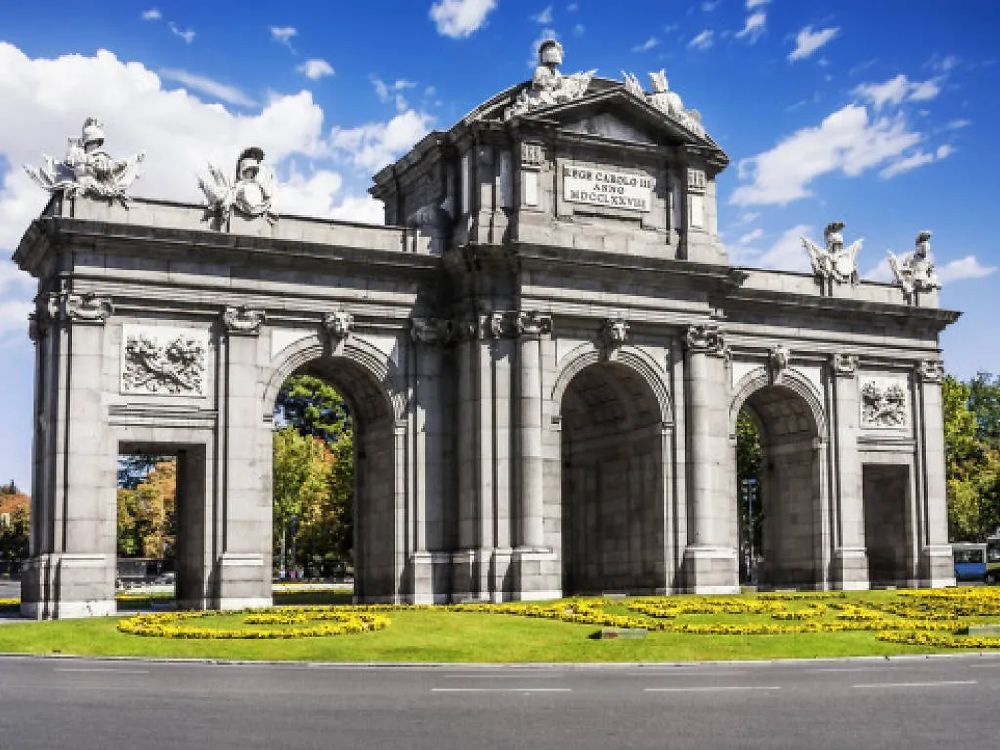
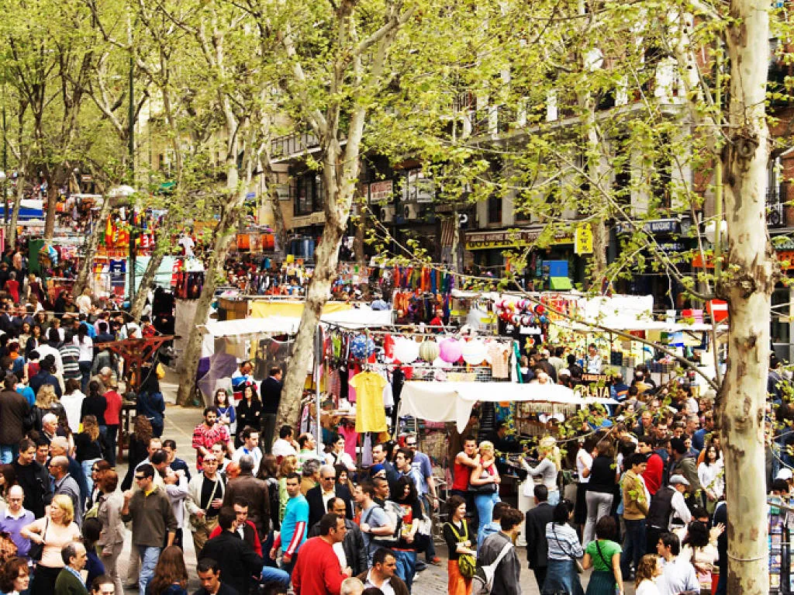
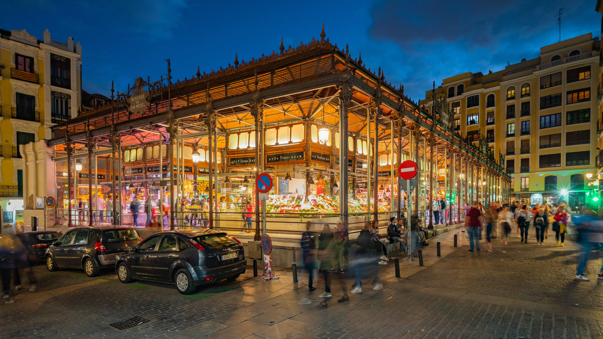
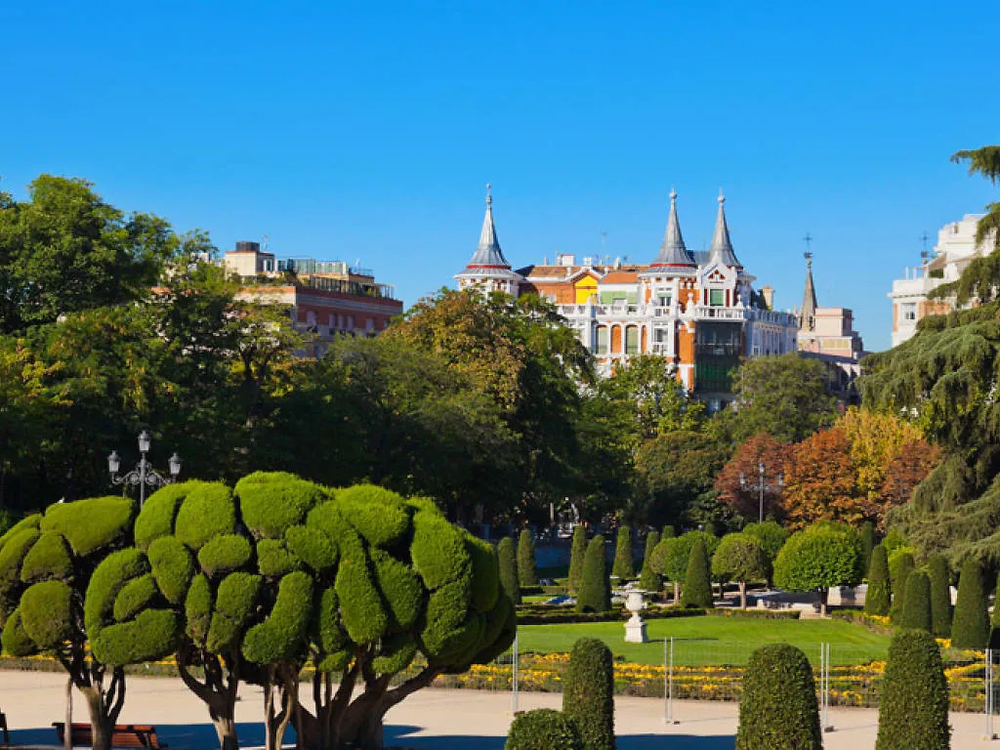
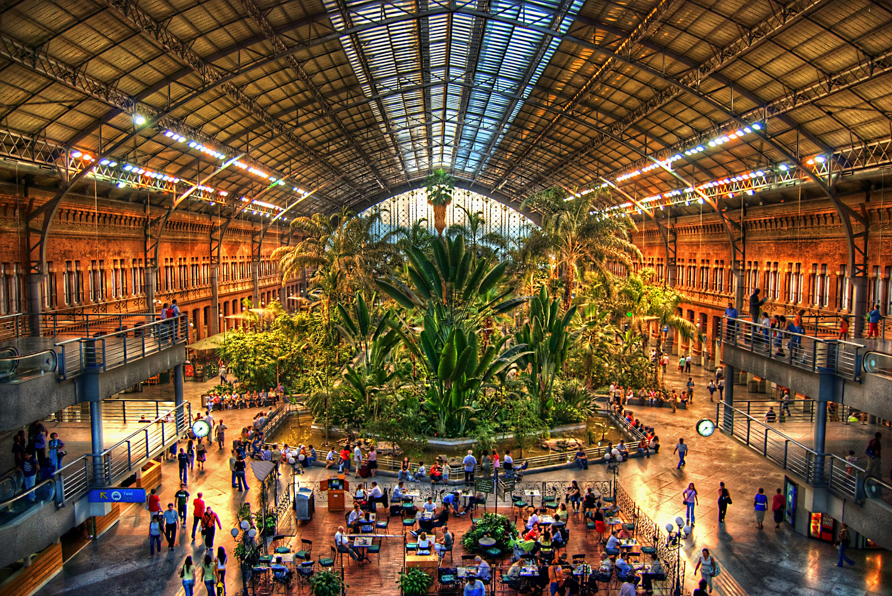

Gran Vía
格蘭大道
Puerta de sol
太陽門廣場

Plaza de Cibeles
西貝萊斯廣場

Puerta de Alcalá
阿爾卡拉門

Palacio Real de Madrid
馬德里皇宮

El rastro
周末跳蚤市場
Estadio Santiago Bernabéu
聖地牙哥·伯納烏球場

El Mercado de San Miguel
聖米格爾市場
Templo de Debod
德波神廟

El Retiro
麗池公園
Real basílica de San Francisco el Grande
大聖方濟各聖殿

Estación de Madrid Atocha